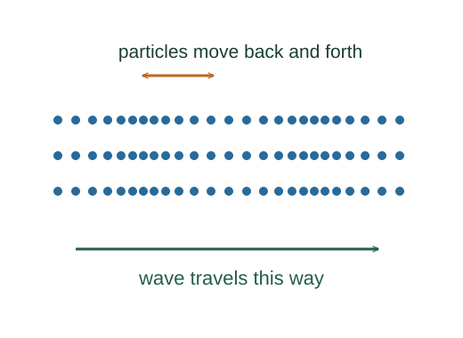

Why sound speed is √(B/ρ)
A sound wave alternately compresses and expands a medium. Its elastic resistance to compression drives the motion, while mass density resists acceleration.
What the symbols mean
B: appropriate bulk modulus (Pa); ρ: equilibrium mass density; ξ(x,t): small longitudinal displacement.
When this applies
Small-amplitude plane longitudinal waves in a homogeneous fluid. Use the modulus appropriate to the thermal process; ordinary gas sound is approximately adiabatic.

Relate compression to pressure
If displacement varies along x, neighbouring fluid elements change separation. To first order the fractional volume change is ∂ξ/∂x. The bulk modulus relates this to pressure perturbation.
Find the force on a slab
The pressure difference across area A and thickness dx produces a net force −A(∂δp/∂x)dx. Its mass is ρA dx.
Use Newton’s equation
Divide force equals mass times acceleration by A dx, then substitute the pressure–compression relation.
Recognize a wave equation
The ratio multiplying the spatial second derivative is the square of the propagation speed. For an ideal gas, the adiabatic bulk modulus is γp.
Go deeper at this stepWhy is an ideal-gas adiabatic process different?Derive pVᵞ = constant for an ideal gasWhere each equation comes from
Derived equations link to an argument below. Definitions, physical postulates and constitutive models are identified as the inputs of that argument.
Derivation of the main resultDerived result
Conditions: Small-amplitude plane longitudinal waves in a homogeneous fluid. Use the modulus appropriate to the thermal process; ordinary gas sound is approximately adiabatic.
- Relate compression to pressure. If displacement varies along x, neighbouring fluid elements change separation. To first order the fractional volume change is ∂ξ/∂x. The bulk modulus relates this to pressure perturbation. Explain the equation used in step 1 ↗
- Find the force on a slab. The pressure difference across area A and thickness dx produces a net force −A(∂δp/∂x)dx. Its mass is ρA dx.
- Use Newton’s equation. Divide force equals mass times acceleration by A dx, then substitute the pressure–compression relation. Explain the equation used in step 3 ↗
- Recognize a wave equation. The ratio multiplying the spatial second derivative is the square of the propagation speed. For an ideal gas, the adiabatic bulk modulus is γp. Explain the equation used in step 4 ↗ Why is an ideal-gas adiabatic process different? ↗
Equation in step 1Model / constitutive input
Model / constitutive input. This relation is an explicit input at this level of the model, rather than a result proved by the equations that use it.
If displacement varies along x, neighbouring fluid elements change separation. To first order the fractional volume change is ∂ξ/∂x. The bulk modulus relates this to pressure perturbation.
Scope: Small-amplitude plane longitudinal waves in a homogeneous fluid. Use the modulus appropriate to the thermal process; ordinary gas sound is approximately adiabatic.
Equation in step 3Derived result
What is being shown: Use Newton’s equation
Divide force equals mass times acceleration by A dx, then substitute the pressure–compression relation.
Earlier results used in this argument:
- δp = −B ∂ξ/∂x (Model / constitutive input)
Equation in step 4Derived result
What is being shown: Recognize a wave equation
The ratio multiplying the spatial second derivative is the square of the propagation speed. For an ideal gas, the adiabatic bulk modulus is γp.
Earlier results used in this argument:
- δp = −B ∂ξ/∂x (Model / constitutive input)
- ρ ∂²ξ/∂t² = −∂δp/∂x = B ∂²ξ/∂x² (Derived result)
A worked example
For air with B ≈ 1.42 × 10⁵ Pa and ρ ≈ 1.20 kg/m³, this gives about 344 m/s.
Derivation behind this calculation ↗A point to keep straight
Using the isothermal gas modulus p instead of the adiabatic γp gives an incorrect value for ordinary sound propagation.
Check the assumptions and derivation ↗